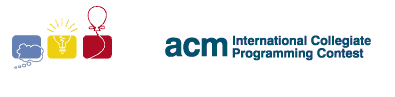

ICPC contest archive
archived copy of
http://www.cs.lth.se/contest/nwerc (2003-04-25 04:33)
(Wayback snapshot 2003-04-25 04:33; fetched 2026-11-13) catalogue:
nwerc-2003
wayback
live

The 2003 ACM Nortwestern Europe Programming Contest
Hosted by Lund Institute of Technology, Sweden
14-16 November 2003
Lund, 2003-03-18,
Contest Director